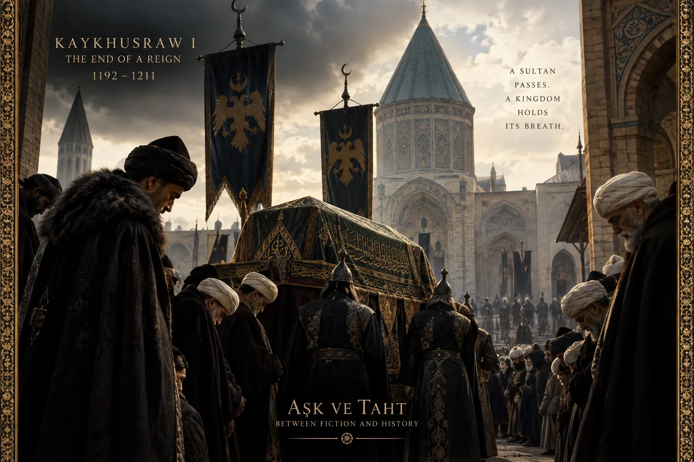
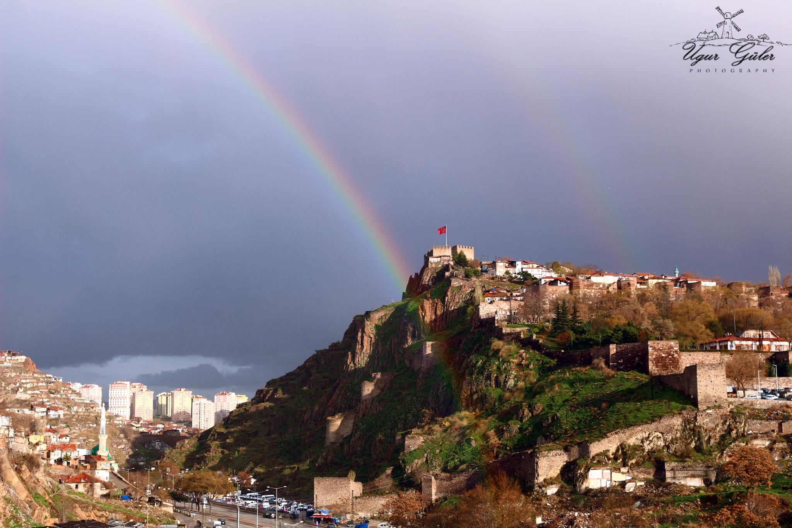
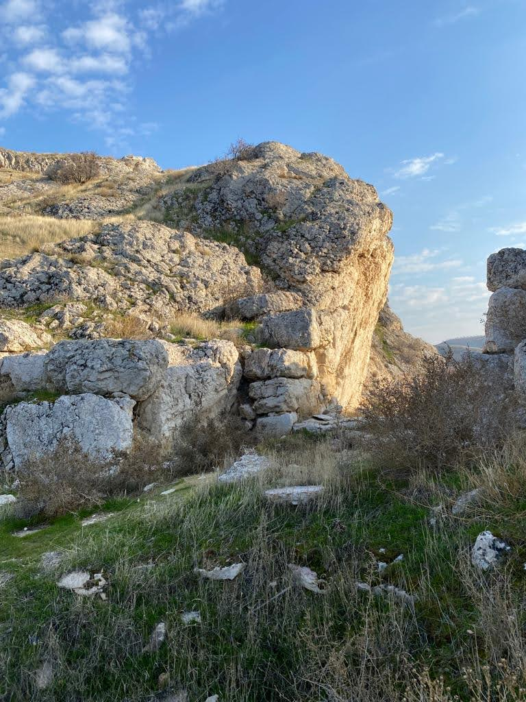
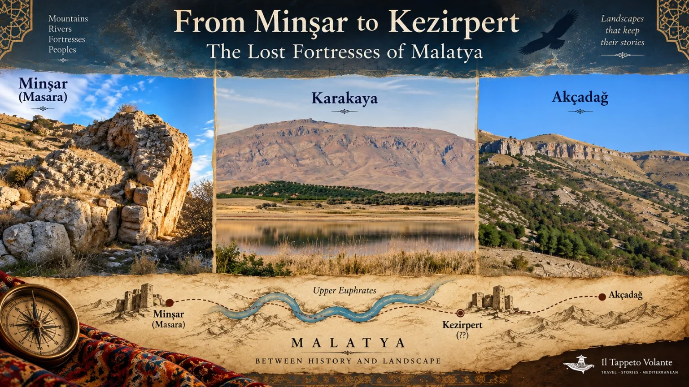

When Aşk ve Taht begins, Alaeddin Keykubad is emerging from years of captivity. But the story that brought him behind fortress walls began long before the prison doors opened.
1211
A Sultan Dies

AI-assisted historical visualization. The scene is evocative and does not reconstruct a documented funeral ceremony.
Sultan Kaykhusraw I died in 1211 after the battle of Alaşehir. His death immediately opened the question of succession in the Seljuk Sultanate of Rum.
The state dignitaries chose his eldest son, Izzeddin Kaykaus, then melik of Malatya. He was summoned and enthroned at Kayseri. His younger brother Alaeddin Keykubad, melik of Tokat, refused to accept the decision.
Brother Against Brother
Alaeddin allied himself with Levon II of Cilician Armenia and his uncle Mughith al-Din Tughril Shah, melik of Erzurum, and moved against Kayseri. The alliance did not hold. Levon withdrew after negotiations with Kaykaus's side, while Tughril Shah returned to Erzurum.
Left without sufficient support, Alaeddin abandoned the siege and withdrew to Ankara Castle.
1212
Ankara — The Throne Was Lost

Ankara Kalesi — Uğur Güler (Ugur0641), Wikimedia Commons, CC BY-SA 4.0.
Kaykaus besieged Ankara Castle. As supplies diminished, Alaeddin agreed to surrender on condition that neither he nor the people of Ankara would be harmed.
He had fought for the throne. Now he was his brother's prisoner.
The Road to Minşar
After the surrender, Alaeddin was taken east and imprisoned in Minşar Castle near Malatya. The sources also preserve a darker episode: Kaykaus wanted his brother killed, but his teacher Mecdüddin Ishak prevented it.

Masara Kalesi (also known as Muşar Kalesi) — photograph by Engin Örüm, 2022. Source: Kültür Envanteri. CC BY-NC-ND 4.0. Image displayed unaltered.
The photograph documents the surviving landscape and ruins identified as Masara/Muşar. It should not be read as a reconstruction of Alaeddin's imprisonment.
From Minşar to Kezirpert

Il Tappeto Volante — geographical narrative plate. Kezirpert is deliberately marked with question marks because its exact modern location is not securely established.
Later traditions and modern reconstructions place Alaeddin's captivity first at Minşar and subsequently at Kezirpert. The precise identification of Kezirpert in today's landscape remains uncertain, so the map treats its position as a historical question rather than a fixed archaeological location.
1220
The Prison Doors Open
When Izzeddin Kaykaus died in 1220, Alaeddin was released from captivity. He was proclaimed ruler at Sivas and later entered Konya, where his accession was celebrated again.
Eight years after losing his struggle for the throne, the prisoner became Sultan Alaeddin Keykubad I.
This is where the historical road meets the opening world of Aşk ve Taht.
The series combines documented people and political tensions with invented scenes, compressed chronology and dramatic relationships. The four questions below separate what Episode 1 shows from what the sources examined can actually establish.
Claim to the throne
Celaleddin — Who Had the Right to Rule?
In the series: Celaleddin is furious that the emirs choose a brother who has spent eight years in captivity and believes the throne should have been his.
In history: Celâleddin Keyferidun was a real Seljuk prince and brother of Alaeddin. What the sources examined do not establish is the specific confrontation and argument shown in Episode 1.
The dramatic claim is therefore not treated here as a documented speech or event.
Betrayal
Ümmühan and Ayaba
In the series: Alaeddin believes that his mother Ümmühan Hatun and the atabeg Ayaba betrayed him and were responsible for his imprisonment.
In history: the sources examined explain Alaeddin's imprisonment through the failed succession struggle, the siege of Ankara and his surrender in 1212. They do not document a betrayal by his mother as the cause.
Ayaba is different: Seyfeddin Ay-aba was a real and powerful emir. Later, in 1223, he appears among the emirs caught in Alaeddin's violent political confrontation with the old military elite.
Chronology
The Ambush — History Moved Back in Time?
In the series: Celaleddin and Arakel arrange an ambush against the newly enthroned Alaeddin.
In the sources examined: we have not found this 1220 ambush. A later crisis, however, is documented in 1223: powerful emirs plotted to remove Alaeddin and replace him with his brother Celâleddin Keyferidun. Seyfeddin Ay-aba was among the emirs arrested.
The series may be drawing on this later political conflict and moving elements of it back to the beginning of the reign. Without a statement from the writers, that remains an interpretation, not a fact.
The mysterious woman
The Woman He Remembered
In the series: years before his imprisonment, a mysterious young woman saved Alaeddin's life and remained in his memory throughout captivity. At the end of Episode 1, the masked archer wounds him in the shoulder, flees and is pursued to the edge of a precipice.
Alaeddin recognizes the woman whose eyes he has remembered for years — but at this point in the story he still does not know the full truth about her identity.
In history: the sources examined do not document this pre-imprisonment encounter, the arrow or the pursuit. We therefore treat these scenes as part of the series' dramatic narrative unless further evidence emerges.
atv — official Episode 1 recap: the series' version of Alaeddin's captivity, Celaleddin, Ayaba, Ümmühan, the ambush and the mysterious woman.
Historical conclusions on this page are limited to what the cited sources support. Where identification, chronology or causation remains uncertain, the uncertainty is stated explicitly.
Where Episode 1 Leaves Us
Alaeddin has survived a struggle for the throne, years of captivity and a return to power.
But the throne does not end the struggle. It begins a new one.